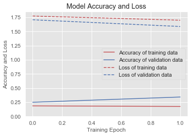
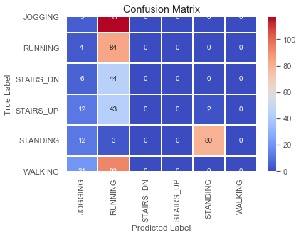
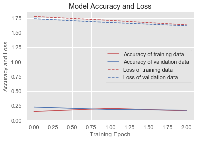
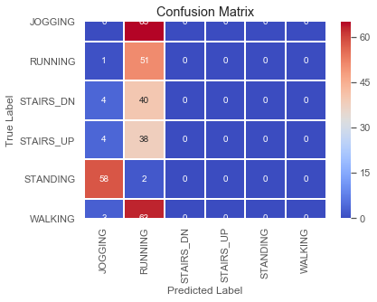
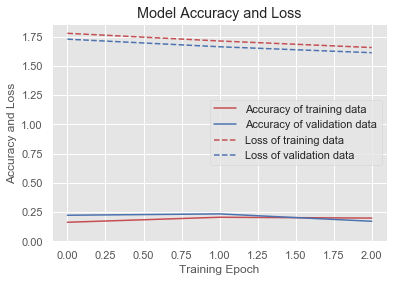
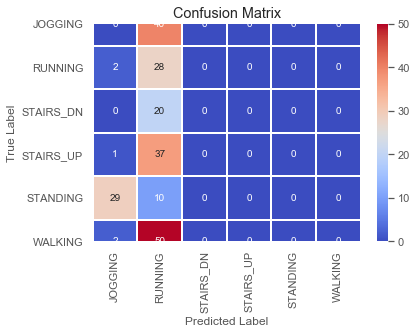
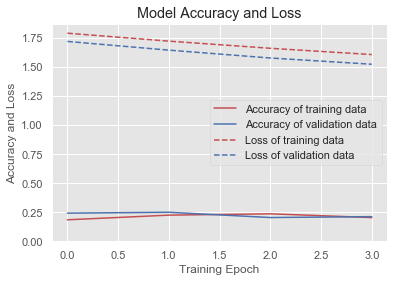
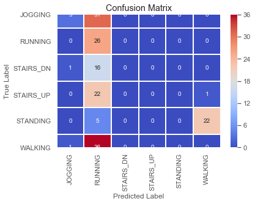
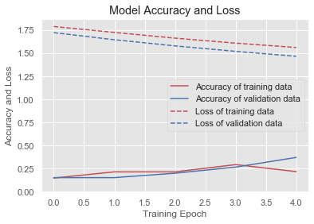
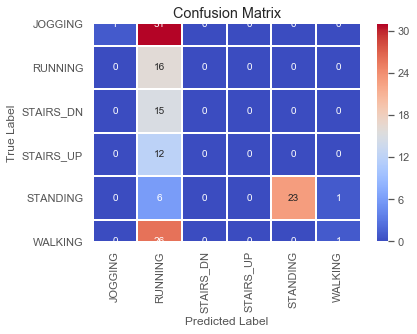

In [131]: for win in windows:
...: window_testing(win)
For window size 50
_________________________________________________________________
Layer (type) Output Shape Param #
=================================================================
reshape_8 (Reshape) (None, 50, 3) 0
_________________________________________________________________
dense_29 (Dense) (None, 50, 100) 400
_________________________________________________________________
dense_30 (Dense) (None, 50, 100) 10100
_________________________________________________________________
dense_31 (Dense) (None, 50, 100) 10100
_________________________________________________________________
flatten_8 (Flatten) (None, 5000) 0
_________________________________________________________________
dense_32 (Dense) (None, 6) 30006
=================================================================
Total params: 50,606
Trainable params: 50,606
Non-trainable params: 0
_________________________________________________________________
None
Train on 1680 samples, validate on 421 samples
Epoch 1/50
1680/1680 [==============================] - 2s 1ms/step - loss: 1.7727 - acc: 0.1857 - val_loss: 1.7066 - val_acc: 0.2494
Epoch 2/50
1680/1680 [==============================] - 0s 199us/step - loss: 1.6991 - acc: 0.1756 - val_loss: 1.5880 - val_acc: 0.3420

C:\Users\anand\Anaconda3\envs\HAR1\lib\site-packages\sklearn\metrics\classification.py:1143: UndefinedMetricWarning: Precision and F-score are ill-defined and being set to 0.0 in labels with no predicted samples.
'precision', 'predicted', average, warn_for)
precision recall f1-score support
0.0 0.10 0.05 0.06 433
1.0 0.21 0.94 0.34 346
2.0 0.00 0.00 0.00 239
3.0 0.00 0.00 0.00 260
4.0 0.97 0.89 0.93 394
5.0 0.00 0.00 0.00 429
micro avg 0.33 0.33 0.33 2101
macro avg 0.21 0.31 0.22 2101
weighted avg 0.24 0.33 0.24 2101

precision recall f1-score support
0.0 0.08 0.04 0.05 122
1.0 0.22 0.95 0.36 88
2.0 0.00 0.00 0.00 50
3.0 0.00 0.00 0.00 57
4.0 0.98 0.84 0.90 95
5.0 0.00 0.00 0.00 114
micro avg 0.32 0.32 0.32 526
macro avg 0.21 0.31 0.22 526
weighted avg 0.23 0.32 0.24 526
Dumping Performance records ..
---------------------------------------------------------
For window size 80
_________________________________________________________________
Layer (type) Output Shape Param #
=================================================================
reshape_9 (Reshape) (None, 80, 3) 0
_________________________________________________________________
dense_33 (Dense) (None, 80, 100) 400
_________________________________________________________________
dense_34 (Dense) (None, 80, 100) 10100
_________________________________________________________________
dense_35 (Dense) (None, 80, 100) 10100
_________________________________________________________________
flatten_9 (Flatten) (None, 8000) 0
_________________________________________________________________
dense_36 (Dense) (None, 6) 48006
=================================================================
Total params: 68,606
Trainable params: 68,606
Non-trainable params: 0
_________________________________________________________________
None
Train on 1049 samples, validate on 263 samples
Epoch 1/50
1049/1049 [==============================] - 2s 2ms/step - loss: 1.7774 - acc: 0.1525 - val_loss: 1.7380 - val_acc: 0.2281
Epoch 2/50
1049/1049 [==============================] - 0s 313us/step - loss: 1.7096 - acc: 0.2059 - val_loss: 1.6729 - val_acc: 0.1863
Epoch 3/50
1049/1049 [==============================] - 0s 334us/step - loss: 1.6338 - acc: 0.1649 - val_loss: 1.6187 - val_acc: 0.1749

precision recall f1-score support
0.0 0.03 0.03 0.03 282
1.0 0.21 0.99 0.34 219
2.0 0.00 0.00 0.00 137
3.0 0.00 0.00 0.00 156
4.0 0.00 0.00 0.00 245
5.0 0.00 0.00 0.00 273
micro avg 0.17 0.17 0.17 1312
macro avg 0.04 0.17 0.06 1312
weighted avg 0.04 0.17 0.06 1312

precision recall f1-score support
0.0 0.00 0.00 0.00 65
1.0 0.20 0.98 0.33 52
2.0 0.00 0.00 0.00 44
3.0 0.00 0.00 0.00 42
4.0 0.00 0.00 0.00 60
5.0 0.00 0.00 0.00 66
micro avg 0.16 0.16 0.16 329
macro avg 0.03 0.16 0.05 329
weighted avg 0.03 0.16 0.05 329
Dumping Performance records ..
---------------------------------------------------------
For window size 120
_________________________________________________________________
Layer (type) Output Shape Param #
=================================================================
reshape_10 (Reshape) (None, 120, 3) 0
_________________________________________________________________
dense_37 (Dense) (None, 120, 100) 400
_________________________________________________________________
dense_38 (Dense) (None, 120, 100) 10100
_________________________________________________________________
dense_39 (Dense) (None, 120, 100) 10100
_________________________________________________________________
flatten_10 (Flatten) (None, 12000) 0
_________________________________________________________________
dense_40 (Dense) (None, 6) 72006
=================================================================
Total params: 92,606
Trainable params: 92,606
Non-trainable params: 0
_________________________________________________________________
None
Train on 700 samples, validate on 175 samples
Epoch 1/50
700/700 [==============================] - 2s 3ms/step - loss: 1.7788 - acc: 0.1629 - val_loss: 1.7286 - val_acc: 0.2229
Epoch 2/50
700/700 [==============================] - 0s 469us/step - loss: 1.7131 - acc: 0.2057 - val_loss: 1.6636 - val_acc: 0.2343
Epoch 3/50
700/700 [==============================] - 0s 476us/step - loss: 1.6570 - acc: 0.1986 - val_loss: 1.6129 - val_acc: 0.1714

precision recall f1-score support
0.0 0.07 0.06 0.06 191
1.0 0.21 0.97 0.34 151
2.0 0.00 0.00 0.00 100
3.0 0.00 0.00 0.00 94
4.0 0.00 0.00 0.00 165
5.0 0.00 0.00 0.00 174
micro avg 0.18 0.18 0.18 875
macro avg 0.05 0.17 0.07 875
weighted avg 0.05 0.18 0.07 875

precision recall f1-score support
0.0 0.00 0.00 0.00 40
1.0 0.15 0.93 0.26 30
2.0 0.00 0.00 0.00 20
3.0 0.00 0.00 0.00 38
4.0 0.00 0.00 0.00 39
5.0 0.00 0.00 0.00 52
micro avg 0.13 0.13 0.13 219
macro avg 0.03 0.16 0.04 219
weighted avg 0.02 0.13 0.04 219
Dumping Performance records ..
---------------------------------------------------------
For window size 160
_________________________________________________________________
Layer (type) Output Shape Param #
=================================================================
reshape_11 (Reshape) (None, 160, 3) 0
_________________________________________________________________
dense_41 (Dense) (None, 160, 100) 400
_________________________________________________________________
dense_42 (Dense) (None, 160, 100) 10100
_________________________________________________________________
dense_43 (Dense) (None, 160, 100) 10100
_________________________________________________________________
flatten_11 (Flatten) (None, 16000) 0
_________________________________________________________________
dense_44 (Dense) (None, 6) 96006
=================================================================
Total params: 116,606
Trainable params: 116,606
Non-trainable params: 0
_________________________________________________________________
None
Train on 524 samples, validate on 132 samples
Epoch 1/50
524/524 [==============================] - 2s 4ms/step - loss: 1.7916 - acc: 0.1851 - val_loss: 1.7206 - val_acc: 0.2424
Epoch 2/50
524/524 [==============================] - 0s 789us/step - loss: 1.7231 - acc: 0.2252 - val_loss: 1.6456 - val_acc: 0.2500
Epoch 3/50
524/524 [==============================] - 1s 966us/step - loss: 1.6617 - acc: 0.2366 - val_loss: 1.5780 - val_acc: 0.2045
Epoch 4/50
524/524 [==============================] - 0s 724us/step - loss: 1.6075 - acc: 0.2042 - val_loss: 1.5243 - val_acc: 0.2121

precision recall f1-score support
0.0 0.25 0.02 0.04 139
1.0 0.21 1.00 0.34 110
2.0 0.00 0.00 0.00 73
3.0 0.00 0.00 0.00 76
4.0 0.00 0.00 0.00 126
5.0 0.00 0.00 0.00 132
micro avg 0.17 0.17 0.17 656
macro avg 0.08 0.17 0.06 656
weighted avg 0.09 0.17 0.07 656

precision recall f1-score support
0.0 0.60 0.09 0.15 34
1.0 0.19 1.00 0.32 26
2.0 0.00 0.00 0.00 17
3.0 0.00 0.00 0.00 23
4.0 0.00 0.00 0.00 27
5.0 0.00 0.00 0.00 37
micro avg 0.18 0.18 0.18 164
macro avg 0.13 0.18 0.08 164
weighted avg 0.15 0.18 0.08 164
Dumping Performance records ..
---------------------------------------------------------
For window size 200
_________________________________________________________________
Layer (type) Output Shape Param #
=================================================================
reshape_12 (Reshape) (None, 200, 3) 0
_________________________________________________________________
dense_45 (Dense) (None, 200, 100) 400
_________________________________________________________________
dense_46 (Dense) (None, 200, 100) 10100
_________________________________________________________________
dense_47 (Dense) (None, 200, 100) 10100
_________________________________________________________________
flatten_12 (Flatten) (None, 20000) 0
_________________________________________________________________
dense_48 (Dense) (None, 6) 120006
=================================================================
Total params: 140,606
Trainable params: 140,606
Non-trainable params: 0
_________________________________________________________________
None
Train on 419 samples, validate on 105 samples
Epoch 1/50
419/419 [==============================] - 2s 6ms/step - loss: 1.7908 - acc: 0.1480 - val_loss: 1.7246 - val_acc: 0.1524
Epoch 2/50
419/419 [==============================] - 0s 1ms/step - loss: 1.7270 - acc: 0.2148 - val_loss: 1.6478 - val_acc: 0.1524
Epoch 3/50
419/419 [==============================] - 0s 1ms/step - loss: 1.6649 - acc: 0.2148 - val_loss: 1.5808 - val_acc: 0.2000
Epoch 4/50
419/419 [==============================] - 0s 993us/step - loss: 1.6107 - acc: 0.2936 - val_loss: 1.5218 - val_acc: 0.2667
Epoch 5/50
419/419 [==============================] - 0s 969us/step - loss: 1.5635 - acc: 0.2172 - val_loss: 1.4678 - val_acc: 0.3714

precision recall f1-score support
0.0 0.40 0.04 0.07 106
1.0 0.22 1.00 0.36 93
2.0 0.00 0.00 0.00 57
3.0 0.00 0.00 0.00 67
4.0 0.99 0.88 0.93 93
5.0 0.33 0.01 0.02 108
micro avg 0.34 0.34 0.34 524
macro avg 0.32 0.32 0.23 524
weighted avg 0.36 0.34 0.25 524

precision recall f1-score support
0.0 1.00 0.03 0.06 32
1.0 0.15 1.00 0.26 16
2.0 0.00 0.00 0.00 15
3.0 0.00 0.00 0.00 12
4.0 1.00 0.77 0.87 30
5.0 0.50 0.04 0.07 27
micro avg 0.31 0.31 0.31 132
macro avg 0.44 0.31 0.21 132
weighted avg 0.59 0.31 0.26 132
Dumping Performance records ..
---------------------------------------------------------
In [132]: